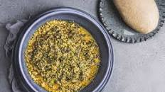

Egusi-Soup

Egusi soup is a popular Nigerian soup that is thickened with ground melon seeds (egusi). The soup is often made with leafy vegetables, meat, and/or fish. Here's a basic recipe for Egusi Soup along with the ingredients:
Ingredients
- Egusi Seeds: 1 cup (ground)
- Vegetable Oil: 1/2 cup
- Assorted Meat: Beef, goat meat, tripe (shaki), cow's tripe (pomo), etc. (about 2 cups)
- Fish: Dry fish or stockfish (about 1 cup)
- Onions: 1 medium-sized (chopped)
- Pepper: Scotch bonnet or habanero pepper (to taste)
- Tomatoes: 2 medium-sized (blended)
- Leafy Vegetables: Spinach, ugu (fluted pumpkin), or other greens (washed and chopped, about 2 cups)
- Seasoning Cubes/Powder: to taste
- Salt: to taste
- Water: as needed
Optional Ingredients:
- Crayfish: 2 tablespoons (ground)
- Palm Oil: 2 tablespoons (for added flavor and color)
- Periwinkle: 1 cup (optional, for seafood flavor)
Steps
- Prepare the Meat and Fish
- Prepare the Egusi Paste
- Prepare the Pepper and Tomatoes
- Heat the vegetable oil in a pot.
- Add the chopped onions and sauté until translucent.
- Add the blended pepper and tomato paste. Cook until the mixture thickens and the oil separates.
- Add the ground egusi paste and continue to fry for about 5-7 minutes, stirring continuously.
- Add Meat and Fish
- Simmer
- Add Vegetables
- Serve the Egusi Soup with a staple such as pounded yam, fufu, rice, or any other preferred side dish.